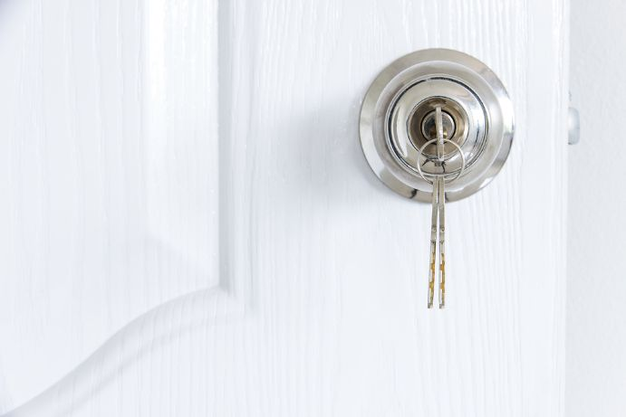
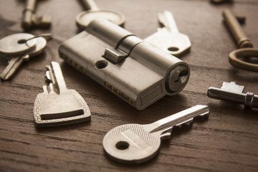
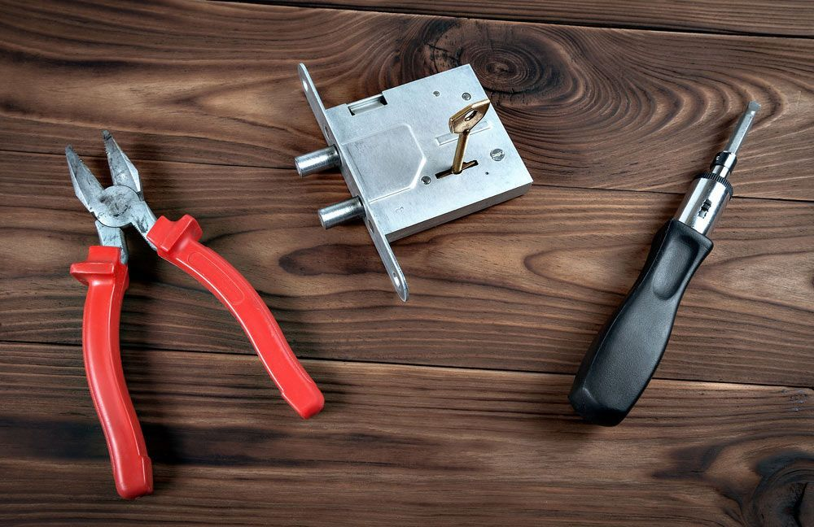

Get A Free Quote Now!
Thank you for contacting SPL Security Solutions.
We will be in touch soon.

Locksmith Solutions Tailored To Your Needs
At SPL Security Solutions, we take pride in offering a suite of locksmith services specifically tailored to meet the diverse needs of the Runaway Bay community. Whether it's the security of your home, the protection of your business or the accessibility of your vehicle, our team is equipped with the knowledge, tools and technology to provide state-of-the-art solutions.
For homeowners, we provide a range of services including the installation of sophisticated lock systems, key duplication and safe installation to ensure your valuables remain secure. Business owners can benefit from our bespoke security assessments, helping to identify any vulnerabilities and implementing tailored solutions such as access control systems, CCTV monitoring and restricted key systems to enhance protection. For car owners, our automotive locksmith services are second to none including emergency lockouts, key replacement and rekeying services, ensuring you're never left stranded.
For more information on our complete locksmith services, call (07) 5588 8111.
Our residential locksmith services in Runaway Bay include lock installations, repairs and rekeying to bolster protection. With our key duplication service, you'll never need another spare set of keys. Should the unthinkable happen, our emergency lockout services are readily available.
Every business has unique security needs in Runaway Bay. Our commercial locksmith services are tailored to meet these requirements, ensuring your premises are safeguarded against unauthorised access. We install state-of-the-art, high-security locks, master key systems and advanced access control solutions. Additionally, we are always at your service with our 24/7 emergency assistance.
For drivers in Runaway Bay, our automotive locksmith services offer speedy solutions for all your key-related needs. From lost or damaged keys to malfunctioning ignitions, our team can help. We also offer transponder programming and 24/7 emergency assistance for those urgent situations. With us, you'll never have to worry about being stranded without help.
Our advanced restricted key systems prevent unauthorised key duplication, providing an efficient way to control access. These custom solutions use patented designs to ensure only authorised personnel have entry to specific areas, greatly reducing the risk of security breaches. In Runaway Bay, our clients can benefit from unmatched security and peace of mind with our restricted key systems.
We provide a range of safes in Runaway Bay designed to offer protection against theft, fire and even water damage. Our options include different sizes and locking mechanisms to suit various security needs—from personal valuables to sensitive business documents. We also offer professional installation, ongoing maintenance and emergency unlocking assistance in the case of forgotten codes or lost keys.
Our integrated security systems in Runaway Bay offer advanced technology and features to protect your property against potential threats. From CCTV cameras and alarm systems to access control and intercoms, we have a range of solutions tailored to meet diverse security needs and budget constraints. Our team can help you choose the most effective combination of products for optimal protection and ease of use.
In Runaway Bay, we provide lock hardware including keyless entry systems, reinforced deadbolts and traditional locks. These options offer reliable security for residential and commercial properties.
Our door hardware range includes durable hinges, energy-efficient closers and decorative handles available in Runaway Bay. These products deliver a combination of functionality, security and modern design.
Our expertly crafted door hardware collection ensures durability and elegance, offering fire-resistant solutions, smooth-operating closers, and stylish handles for any space in Runaway Bay.
24/7 Emergency Locksmith Services
Emergencies wait for no one and at SPL Security Solutions, neither do we! Our commitment to you is evident via quick and seamless support whenever you need it. For residents of Runaway Bay and the surrounding community, our 24/7 emergency locksmith services offer peace of mind during those unexpected lock out scenarios or post-break-in situations where your security feels compromised.
Our skilled team stand ready to arrive at your location, bringing with them the expertise and tools necessary for on the spot services such as lock replacement, rekeying and key cutting. In instances of break-ins, we can assess your property including any damage to entry points and carry out the necessary repairs or replacements to re-secure your premises.

Contact Details
24/7 Emergency Locksmiths or Security Tech


Trading Hours
Retail Shop

Frequently Asked Questions
-
Are combination locks secure?
Combination locks can offer a reasonable level of security, especially if they have a large number of possible combinations and are robustly constructed. However, they may not provide the same level of security as high-quality mechanical or electronic locks.
-
How can I visually deter burglars from targeting my locks?
To visually deter burglars, use high-security locks with visible branding from reputable security companies, install security cameras near entry points and use additional security devices such as door reinforcements or window locks, making your home appear more challenging to break into.
Locksmith & Security Solutions Gold Coast, Brisbane & Northern NSW